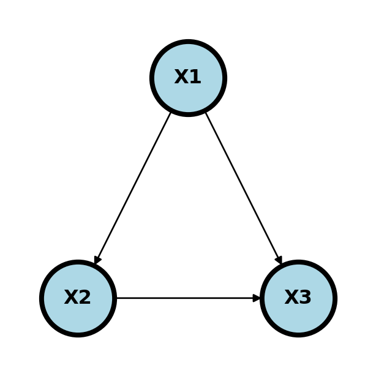

A simple causal diagram.
Causal models differ from associational models in that they codify causal directions not just associations. In our program, you might have learned of the use of propensity scores, counterfactuals or randomization to study causality. There, typically the goal is to make causal statements with as few assumptions as possible or at least understanding the assumptions. Typically the object of study is the estimation of an effect avergated over covarites.
Causal graphs take a different approach, even if they wind up at a similar same place. Here, the goal is to postulate hyptothetical causal relationships and use those hypothetical relationships to estimate causal effects. In that sense, they use more assumptions. But, on the other hand, the very act of postulating causal relationships has a benefit unto itself. Moreover, causal graphs intersect with understanding causal theory more generally.
A structural causal model (SCM) over a collection of variables, \(X=(X_1, \ldots, X_p)\), postulates a set of functional relationships \[ X_j = f(P_j, \epsilon_j) \] where \(P_j\) are the antecedent causes of \(X_j\), called the parents of \(X_j\), and \(\epsilon_j\) is an accumulation of variables treated as mutally independent. This defines a directed graph, \(G\) say, where a graph is collection of vertices corresponding to our variables, \(V=\{1,\ldots, p\}\), corresponding to the \(X_i\), and edges, \(E\), which is a set of ordered pairs of nodes. Node \(i\) is a parent of node \(j\) if \((i,j) \in E\) and \((j,i)\notin E\). Similarly, node \(i\) is a child of node \(j\) if \((j,i) \in E\) and \((i,j)\notin E\). A node is a descendant of another if it is a child, or a child of a child and so on.
A simple causal diagram.
In this case, \(P_1 = \{\}\), \(P_2 = \{1\}\) and \(P_3 = \{1,2\}\). SCMs define a unique probability distribution over \(X\).
Given a cross-sectional sample, we can estimate the joint distribution of \(P(X_1,\ldots, X_p)\) and all of its conditionals. These conditionals must agree with the causal graph in a sense. Specifically, it agrees with the conditional independence (Markov) model implied by the associated undirected graph. Causality comes in from our assuming arrows and using these assumptions in a specific way.
One specific way in which we use the assumptions is to investigate how the graph changes when we fix a node at a specific value, like an intevention, thus breaking its association with its parents. This operation is conceptual, but at times we can relate probabilities associated with interventions that were not realized. Consider an instrance where where \(X_1\) is a collection of confounders, \(X_2\) is an exposure and \(X_3\) is an outcome. Ideally, we’d like to know \[ P(X_3 ~|~ do(X_2) = x_2) \] That is, the impact on the response if we were to set the exposure to \(e_0\).
Return to diagram (three-node?).
Consider an example. \(X1\) is having a BMI > 35, \(X2\) is sleep disordered breathing and \(X3\) is hypertension.
Here if we’re studying whether SDB causes HTN, BMI35 confounds the relationship as a possible common cause of both. We would need to adjust for BMI35 to make sure the association between SDB and HTN isn’t just due to this common cause.
If we were studying whether BMI35 causes HTN, we might be interested in how much of that effect is mediated (indirectly) through SDB and how much is directly from BMI35.
If we are studying the relationship between BMI35 and SDB directly, adjusting for HTN may cause an association. Consider the (fictitious) case where there is a large number of people who have SDB who are not obese, yet all have hypertension, for whatever the reason. Then, among the HTN, there could be a negative association between BMI35 and SDB, because of the large collection of patients would who have SDB and are not obese and the same for obese and not hyptertensive. That is, adjusting for HTN created an association. This is an example of Berkson’s paradox. This is a somewhat contrived example, but hopefully you get the point. The wikipedia article has a funny example where they consider \(X_1\) is whether or not the hamburger is good at a fast food restaurant, \(X_2\) is whether or not the fries are good and \(X_3\) is whether or not people eat there. Since few people would eat at a place where both the hamburger and fries are bad, conditioning on \(X_3\) can create a negative association.
The main point here is that adjusting for colliders may open up a pathway between the nodes.
A path between two nodes \(n_1\) and \(n_k\) is a sequence of nodes, \(v_1, v_2,\ldots v_{k}\), where \(v_{i}\) and \(v_{i+1}\) are connected. The path is directed if \(v_{i}\) points to \(v_{i+1}\) for \(i=1,\ldots,k\). A graph is a Directed Acyclic Graph (DAG) if all edges are directed and there are no two nodes \(v_i\) and \(v_j\) with a directed path in both directions.
A path between \(v_1\) and \(v_k\), \(v_1,\ldots, v_k\), is blocked by a set of nodes, \(S\), if for some \(v_j\) in \(S\)
In other words, a path is blocked if a mediator or confounder is included in \(S\) or a collider and all of its descendants is excluded from \(S\).
For 1. this is equivalent to saying one of
holds. For 2. recall a collider is \(v_{j-1}\rightarrow v_{j} \leftarrow v_{j+1}\).
We say that two nodes or groups of nodes are D-Separated by a set of nodes, \(S\), if every path between nodes in the two groups is blocked by \(S\).
Consider the following graph.

Here are the minimal valid D-separating paths between \(X\) and \(Y\):
Here are some invalid D-separating sets.
Importantly, if \(S\) D-separates \(X\) and \(Y\) then in the implied distribution from the SCM, \(X \perp Y ~|~ S\).
Recall that specifying a causal graph model implies a probability distribution. Moreover, the implied independence relationships are given by the undirected graph.
Consider a theoretical intervention obtained by setting \(X = a\), which we write as \(do(X) = a\). We want to estimate \(P(Y ~|~ do(X) = a)\), which is fundamentally different than \(P(Y ~|~ X = a)\).
A set \(Z\) satisfies the back door criterion with respect to nodes \(X\) and \(Y\) if
The magic of the back door adjustment comes from the relationship:
\[ P(Y ~|~ do(X) = x) = \sum_{z} P(y ~ | x, z) p(z) \]
where \(z\) are the collection of variables in \(S\). If the \(z\) are all observed variables, then the RHS of this equation is estimable. Note the interesting statement that not all variables need to be observed, just \(y\), \(x\) and \(z\).